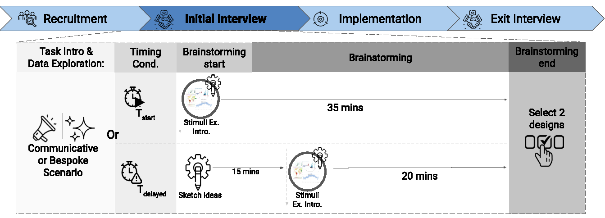
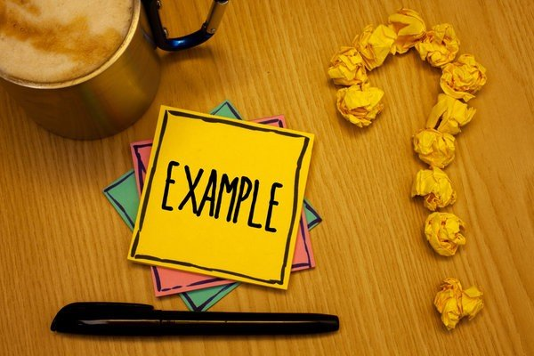
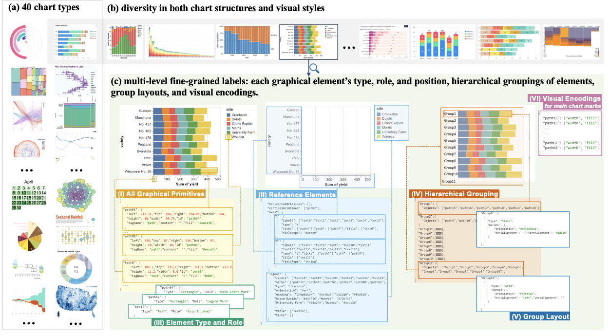
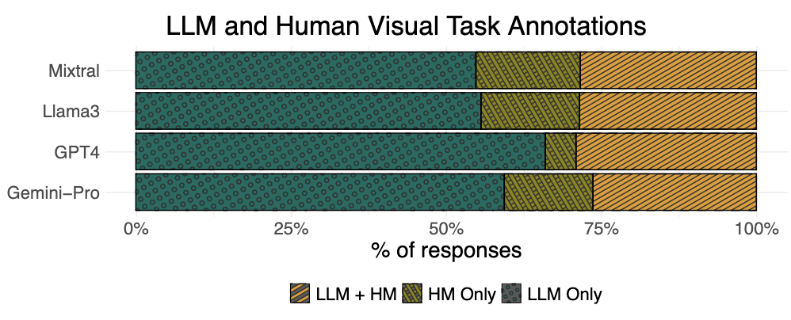
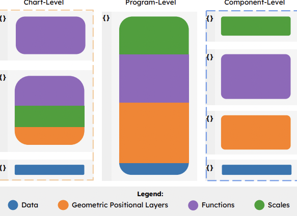
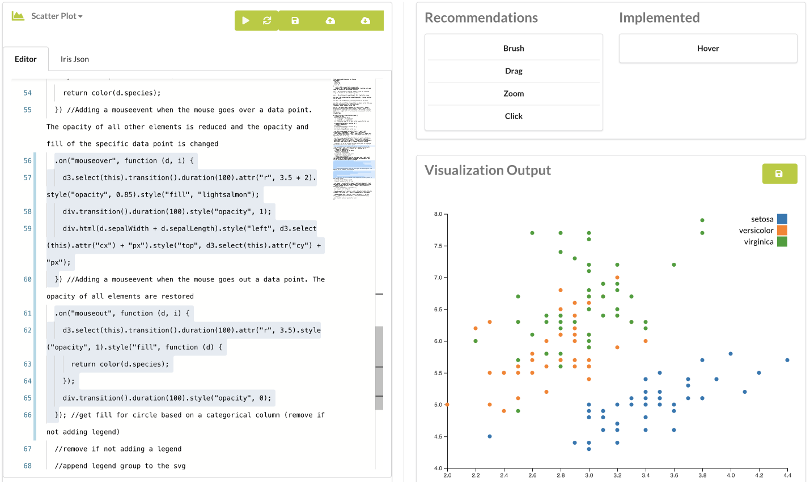
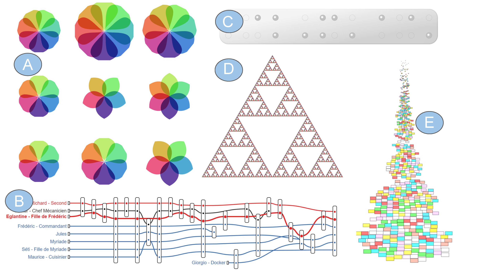

Research & Publications
Explore our work across three research themes. Use the filters to find papers by theme, year, or venue.

Unveiling How Examples Shape Visualization Design Outcomes
Hannah K. Bako, Xinyi Liu, Grace Ko, Hyemi Song, Leilani Battle & Zhicheng Liu
IEEE Visualization and Visual Analytics Conference
Design Ideation
2024

Understanding how Designers Find and Use Data Visualization Examples
Hannah K. Bako, Xinyi Liu, Leilani Battle, & Zhicheng Liu
IEEE Visualizations and Visual Analytics Conference
Design Ideation
2022

VisAnatomy: An SVG Chart Corpus with Fine-Grained Semantic Labels
Chen Chen, Hannah K. Bako, Peihong Yu, John Hooker, Jeffrey Joyal, Simon C. Wang, Samuel Kim, Jessica Wu, Aoxue Ding, Lara Sandeep, Alex Chen, Chayanika Sinha, Zhicheng Liu
IEEE Visualization and Visual Analytics Conference
Design Knowledge
2025

Evaluating the Semantic Profiling Abilities of LLMs for Natural Language Utterances in Data Visualization
Hannah K. Bako, Arshnoor Buthani, Xinyi Liu, Kwesi Cobbina & Zhicheng Liu
IEEE Visualization and Visual Analytics Conference
Design Knowledge
2024

How do Observable Users Decompose D3 Code? An Exploratory Study
Melissa Lin, Heer Patel, Medina Lamkin, Hannah K. Bako, Leilani Battle
IEEE Visualization and Visual Analytics Conference
Development & Discovery
2025

User-Driven Support for Visualization Prototyping in D3
Hannah K. Bako, Alisha Varma, Anuoluwapo Faboro, Mahreen Haider, Favour Nerrise, Bissaka Kenah, John Dickerson, & Leilani Battle
ACM Conference on Intelligent User Interfaces
Development & Discovery
2023

Streamlining Visualization Authoring in D3 Through User-Driven Templates
Hannah K. Bako, Alisha Varma, Anuoluwapo Faboro, Mahreen Haider, Favour Nerrise, Bissaka Kenah, & Leilani Battle
IEEE Visualizations and Visual Analytics Conference
Development & Discovery
2022